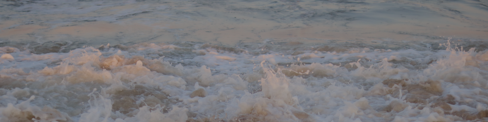

About Me

About Me
A bit more about who I am, what I do, where I’ve been, and where I’m headed
Biography
I am a recent graduate of the Bren School of Environmental Science & Management at the University of California, Santa Barbara, where I earned a master’s degree in Environmental Data Science (MEDS). I also hold a BS in Biology from the College of Agriculture and Life Sciences at Iowa State University.
Passionate about leveraging data science solutions to address environmental challenges, I am focused on applying my skills in geospatial analysis, environmental modeling, machine learning, and data visualization to the fields of natural resource management and sustainable food production.
During my time at the Bren School, I completed a capstone project in collaboration with UCSB researchers and Ocean Rainforest Inc., developing a data pipeline for kelp forest modeling to inform restoration and aquaculture efforts. Prior to that, I gained valuable experience working with the Janke Lab and the Iowa Department of Natural Resources, where I assessed new technologies for monitoring local wildlife.
Beyond my core areas of interest, I am an animal ecology nerd with a deep commitment to ocean conservation, climate solutions, and environmental justice. I am driven to build a career as a data scientist dedicated to finding innovative environmental solutions that contribute to a sustainable future for all.
With my interdisciplinary background and strong skill set, I am ready to make an impact in the field of environmental data science, bridging the gap between scientific research, technological advancements, and practical conservation strategies.

My Hobbies!
What do I do outside of the office and classroom? I love walking, biking, swimming, and generally spending time outdoors. You can frequently catch me reading a book, and it’s most likely a mystery/thriller novel (find me on Goodreads!) I spend a lot of time in the kitchen cooking and baking – I picked up these two hobbies during the COVID-19 pandemic shut down. Last, I dabble in digital illustration, graphic design, and photography. I have been selling prints and stickers since 2017. Much of my artwork has environmental themes. All of the photographs, illustrations, and icons found my website are my own.


My Homes
I grew up in the state of Iowa, but I’ve moved around a lot in my adult life! I participated in multiple National Student Exchange programs, and I moved around for internships and fellowships. Check out all the places I’ve lived since I started college in 2016 – size indicates relatively how long I lived there:
Map made using package leaflet and data from: https://simplemaps.com/data/us-cities
What’s Next for Me?
I am excited to start my career as an environmental data scientist! Broadly, I hope to find a role where I can bring technical solutions to environmental challenges and contribute to an organization focused on natural resource management or sustainable food production. I am ideally looking for jobs in Santa Barbara, San Diego, or remote opportunities.